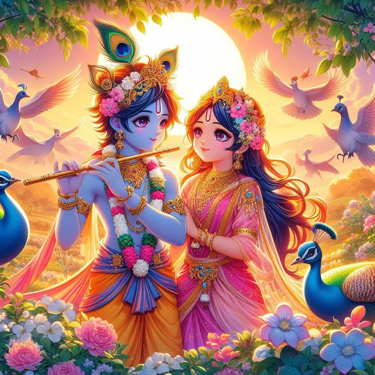
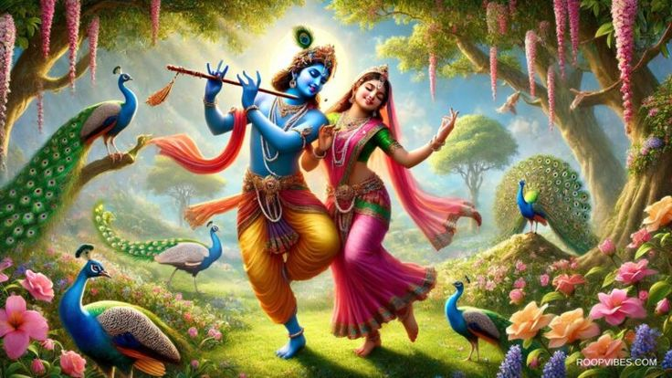
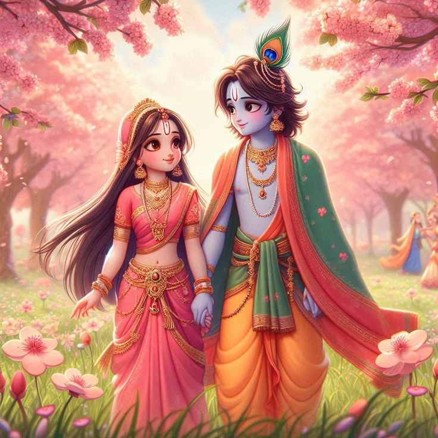
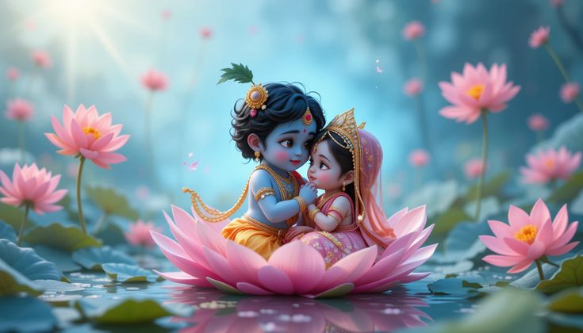
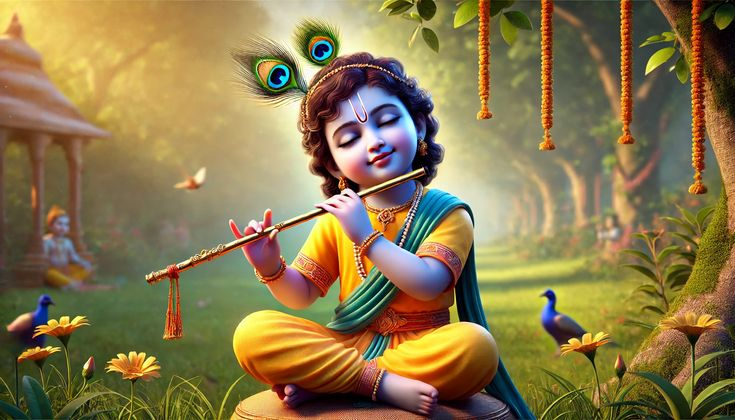
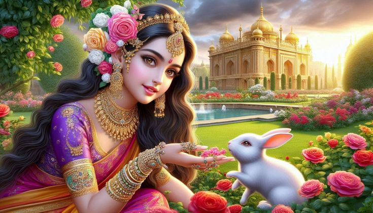
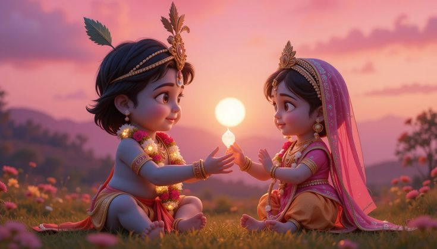

प्रेम का एक प्यारा सपना 💕

Welcome to the sweet world of Radha Krishna, where love blooms like flowers in Vrindavan!
राधा कृष्ण की प्यारी दुनिया में आपका स्वागत है, जहाँ प्रेम वृंदावन के फूलों सा खिलता है!
Radha and Krishna's love is like a sprinkle of magic in Vrindavan's gardens. Their giggles, glances, and playful moments create a fairy tale that warms every heart. Let’s dive into their adorable world!
राधा और कृष्ण का प्रेम वृंदावन के बगीचों में जादू की तरह है। उनकी हंसी, नजरें और शरारती पल एक ऐसी परियों की कहानी रचते हैं जो हर दिल को गर्माहट देती है।


Radha twirls in Krishna's playful gaze,
Their love sparkles in Vrindavan's maze.
राधा कृष्ण की शरारती नजरों में नाचती है,
उनका प्रेम वृंदावन की गलियों में चमकता है।

Krishna's flute whispers a sweet lullaby,
Radha's heart flutters like a butterfly.
कृष्ण की बांसुरी मधुर लोरी सुनाती है,
राधा का दिल तितली सा फड़फड़ाता है।

In moonlit nights, their love does glow,
Like stars that twinkle in a soft flow.
चांदनी रातों में, उनका प्रेम चमकता है,
जैसे तारे जो धीमे प्रवाह में टिमटिमाते हैं।

Radha's smile, Krishna's tender touch,
Their love is a dream we love so much.
राधा की मुस्कान, कृष्ण का कोमल स्पर्श,
उनका प्रेम एक सपना है जो हमें बहुत प्यारा है।

Hand in hand, by Yamuna they roam,
Their love makes every heart a home.
हाथ में हाथ, यमुना किनारे वे घूमते हैं,
उनका प्रेम हर दिल को घर बनाता है।
राधा और कृष्ण का प्यारा प्रेम हर गीत और कहानी में बसता है।
Click for a sprinkle of Radha Krishna’s love!